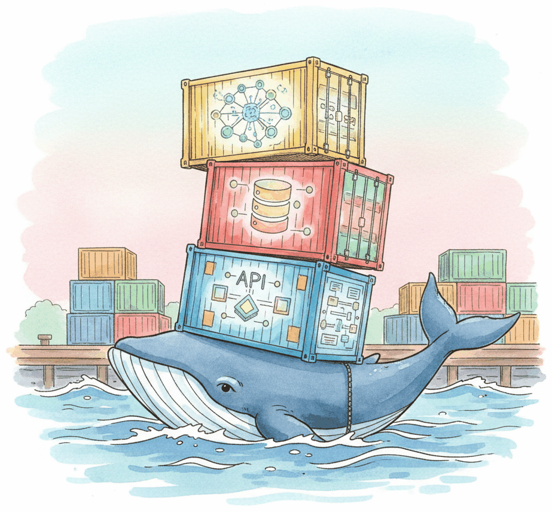

Containers provide reproducible, portable environments that eliminate the "it works on my machine" problem that plagues ML projects. Docker packages your application code, Python dependencies, model weights, and system libraries into a single image that runs identically on a laptop, a cloud VM, or a Kubernetes cluster. For LLM workloads, containerization is especially important because the dependency stack (CUDA drivers, PyTorch builds, model-specific libraries) is notoriously fragile.
This appendix is a hands-on reference. For the production-engineering patterns that decide when and how to containerize, see Chapter 35: LLMOps & Deployment Engineering. Use this appendix when you need quick API recall or a code recipe; use the chapter when you need to understand why a pattern works.
This appendix covers Docker fundamentals (images, containers, volumes, networks), writing Dockerfiles optimized for ML workloads (multi-stage builds, layer caching, NVIDIA base images), orchestrating multi-service AI applications with Docker Compose (e.g., a vLLM server + a RAG API + a vector database), and containerizing LLM inference servers for production deployment. GPU passthrough via the NVIDIA Container Toolkit is covered in detail, since most LLM workloads require GPU access inside the container.
This material is for any developer or ML engineer who needs to package, ship, or deploy LLM applications. Whether you are setting up a reproducible development environment, building CI/CD pipelines for model updates, or deploying inference servers to production, Docker is the standard packaging format.
Containerization is a key component of the production engineering workflow described in Chapter 35 (Production Engineering). For environment setup without containers, see Appendix I (Environment Setup). When containerizing inference servers specifically, pair this appendix with Appendix M (Inference Serving) for vLLM, TGI, and SGLang configuration details.
Review Appendix I (Environment Setup) to understand Python environments, package managers, and GPU driver installation, as Docker builds on these concepts. Basic familiarity with the command line (navigating directories, running scripts, editing configuration files) is required. No prior Docker experience is assumed; the appendix starts from fundamentals.
Use this appendix when you need to share a reproducible ML environment with teammates, deploy an LLM inference server to a cloud instance, build a multi-service application (API + model server + database), or set up CI/CD for model training pipelines. Docker Compose is particularly useful for local development of RAG systems where you need a vector database, an embedding service, and an application server running together. If you are only running experiments on a personal machine and do not need portability, the environment setup in Appendix I may suffice without containerization.